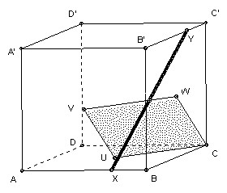

IMO 1962

Problem A3
The cube ABCDA'B'C'D' has upper face ABCD and lower face A'B'C'D' with A directly above A' and so on. The point x moves at constant speed along the perimeter of ABCD, and the point Y moves at the same speed along the perimeter of B'C'CB. X leaves A towards B at the same moment as Y leaves B' towards C'. What is the locus of the midpoint of XY?
Solution

Answer: the rhombus CUVW, where U is the center of ABCD, V is the center of ABB'A, and W is the center of BCC'B'.
Take rectangular coordinates with A as (0, 0, 0) and C' as (1, 1, 1). Let M be the midpoint of XY. Whilst X is on AB and Y on B'C', X is (x, 0, 0) and Y is (1, x, 1), so M is (x/2 + 1/2, x/2, 1/2) = x (1, 1/2, 1/2) + (1-x) (1/2, 0, 1/2) = x W + (1-x) V, so M traces out the line VW.
Whilst X is on BC and Y is on C'C, X is (1, x, 0) and Y is ( 1, 1, 1-x), so M is (1, x/2+1/2, 1/2 - x/2) = x (1, 1, 0) + (1-x) (1, 1/2, 1/2) = x C + (1-x) W, so M traces out the line WC.
Whilst X is on CD and Y is on CB, X is (1-x, 1, 0) and Y is (1, 1-x, 0), so M is (1-x/2, 1-x/2, 0) = x (1, 1, 0) + (1-x) (1/2, 1/2, 0) = x C + (1-x) U, so M traces out the line CU.
Whilst X is on DA and Y is on BB', X is (0, 1-x, 0) and Y is (1, 0, x), so M is (1/2, 1/2 - x/2, x/2) = x (1/2, 0, 1/2) + (1-x) (1/2, 1/2, 0) = x V + (1-x) U, so M traces out the line UV.

Solutions are also available in: Samuel L Greitzer, International Mathematical Olympiads 1959-1977, MAA 1978, and in István Reiman, International Mathematical Olympiad 1959-1999, ISBN 189-8855-48-X.
4th IMO 1962
© John Scholes
jscholes@kalva.demon.co.uk
19 Sep 1998
Last corrected/updated 24 Sep 2003